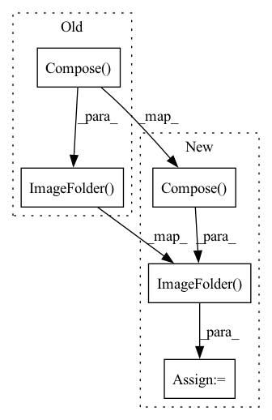

Pattern ID :36343

Before Change
num_workers=args.workers, pin_memory=True, sampler=train_sampler)
val_loader = torch.utils.data.DataLoader(
datasets.ImageFolder(valdir, transforms.Compose([
transforms.Resize(256),
transforms.CenterCrop(224),
transforms.ToTensor(),
normalize,
])),
batch_size=args.batch_size, shuffle=False,
num_workers=args.workers, pin_memory=True)
After Change
train_dataset, batch_size=args.batch_size, shuffle=(train_sampler is None),
num_workers=args.workers, pin_memory=True, sampler=train_sampler)
val_dataset = datasets.ImageFolder(
valdir,
transforms.Compose([
transforms.Resize(256),
transforms.CenterCrop(224),
transforms.ToTensor(),
normalize,
]))
val_loader = torch.utils.data.DataLoader(
val_dataset,
batch_size=args.batch_size, shuffle=False,
num_workers=args.workers, pin_memory=True)
In pattern: SUPERPATTERN
Frequency: 3
Non-data size: 5
Instances
Fragment ID: 102947091
Project Name: richardkxu/distributed-pytorch
Commit Name: b61cac2f067c39b12f505c39f3d062c81a536ac7
Time: 2020-01-31
Author: richardkxu@gmail.com
File Name: imagenet_ddp_mixprec.py
M Class Name: AnonimousClass
N Class Name: AnonimousClass
M Method Name: main_worker(3)
N Method Name: main_worker(3)
M Parent Class:
N Parent Class:
M File Name: imagenet_ddp_mixprec.py
N File Name: imagenet_ddp_mixprec.py
M Start Line: 132
M End Line: 246
N Start Line: 169
N End Line: 255
'>
Before Change
pin_memory=True,
sampler=self.train_sampler)
self.testLoader = torch.utils.data.DataLoader(datasets.ImageFolder(
valdir,
transforms.Compose([
transforms.Resize(256),
transforms.CenterCrop(224),
transforms.ToTensor(),
normalize,
])),
batch_size=args.train_batch_size,
shuffle=False,
num_workers=8,
After Change
num_workers=8,
pin_memory=pin_memory)
testset = datasets.ImageFolder(
valdir,
transforms.Compose([
transforms.Resize(256),
transforms.CenterCrop(224),
transforms.Resize(scale_size),
transforms.ToTensor(),
normalize,
]))
self.testLoader = DataLoader(
testset,
batch_size=opt.test_batch_size,
shuffle=False,
'>
Fragment ID: 102947088
Project Name: sjleo/ffsd
Commit Name: 57f360a6abb456e46a7db2aa19f1658acc449c19
Time: 2020-11-16
Author: 864589477@qq.com
File Name: data/imagenet.py
M Class Name: Data
N Class Name: Data
M Method Name: __init__(2)
N Method Name: __init__(2)
M Parent Class:
N Parent Class:
M File Name: data/imagenet.py
N File Name: data/imagenet.py
M Start Line: 12
M End Line: 46
N Start Line: 8
N End Line: 49
'>
Before Change
train_dataset, batch_size=batch_size, shuffle=True,
num_workers=workers, pin_memory=True)
val_loader = torch.utils.data.DataLoader(
datasets.ImageFolder(valdir, transforms.Compose([
transforms.Resize(256),
transforms.CenterCrop(input_size),
transforms.ToTensor(),
normalize,
])),
batch_size=batch_size, shuffle=False,
num_workers=workers, pin_memory=True)
return train_loader, val_loader
After Change
transforms.ToTensor(),
normalize,
]))
val_dataset = datasets.ImageFolder(valdir, transforms.Compose([
transforms.Resize(256),
transforms.CenterCrop(input_size),
transforms.ToTensor(),
normalize,
])),
if dist_sample:
train_sampler = torch.utils.data.distributed.DistributedSampler(train_dataset)
val_sampler = torch.utils.data.distributed.DistributedSampler(val_dataset)
else:
train_sampler = None
val_sampler = None
'>
Fragment ID: 102947089
Project Name: yhhhli/brecq
Commit Name: b17859b0f2724f7d8968040001e48a0d60b5b2c9
Time: 2021-07-30
Author: loafyuhang@gmail.com
File Name: data/imagenet.py
M Class Name: AnonimousClass
N Class Name: AnonimousClass
M Method Name: build_imagenet_data(5)
N Method Name: build_imagenet_data(4)
M Parent Class:
N Parent Class:
M File Name: data/imagenet.py
N File Name: data/imagenet.py
M Start Line: 12
M End Line: 37
N Start Line: 9
N End Line: 45